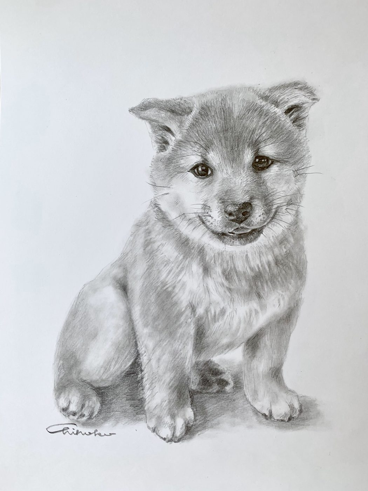

2019.09.23 20:22
アトリエうののんお客さん第一号

今から1ヶ月前のことです。
アトリエうののんをスタートさせようと思いinstagram を通じて仲よくなったフォロワーさんに「わたし、犬の絵描きさんをやろうと思っています。」とメッセージした直後の返信が驚きでした
。
「わたし、お客さん第一号になります‼️」
絵も値段も何も無い状態で、その言葉には相当に励まされました。
うのちゃんのことが大好きなフォロワーさんですので
「もちろん、うのちゃんの絵で」と添えられてました。
その方がのちに選んでくださったのが、この鉛筆画です。
このうのちゃんの目を気に入っていただきました。
うのちゃんは小さい時から目にインパクトがあって、ほかのパピー柴ちゃんとは違う雰囲気でした。
オーダーのほかに うののんの絵も時々描いていきたいと思っています😊